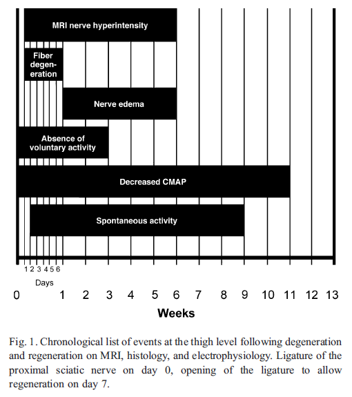

Hoofdstuk 15 Trigeminus letsels
15.1 Chronologie van degeneratie en regeneratie

15.2 Neurosensorische testen
| Level A: Spatiotemporal Sensory Perception1 | Level B: Contact Detection2 | Level C: Pain Threshold and Tolerance3 | |
|---|---|---|---|
| Normal | Present | Present | Present |
| Mild | Failed | Present | Present |
| Moderate | Failed | Failed | Present |
| Severe | Failed | Failed | Elevated |
| Complete | Failed | Failed | Absent |
1 Direction Sensitivity <90%, Static 2-Point Discrimination <18 mm
2 Monofilament <2.83
3 Pressure Pain Tolerance <2.0 lb (<1 kg), Pressure Pain Threshold <1.5 lb (680 gram), Heat Temperature Threshold <47°C, Heat Temperature Tolerance <50°C
15.3 Neurosensorische flowchart
Figure 15.1: QST Flowchart
| S0 | Afwezigheid van gevoel in het autonome gebied van de zenuw |
| S1 | Herstel van diepe cutane pijn en tactiele gevoeligheid |
| S1+ | Herstel van oppervlakkige pijngevoeligheid |
| S2 | Herstel van een zekere mate van oppervlakkige cutane pijn en tactiele gevoeligheid |
| S2+ | Zoals in S2, maar met een overdreven reactie |
| S3 | Terugkeer van pijn en tactiele gevoeligheid met verdwijnen van overrespons, statische 2PD>15mm, bewegende 2PD>7mm |
| S3+ | Terugkeer van gevoel zoals in S3 met enig herstel van tweepuntsdiscriminatie, statische 2PD: 7-15mm, bewegende 2PD: 4-7mm |
| S4 | Volledig herstel, statische 2PD: 2-6mm, bewegende 2PD: 2-3mm |
15.4 Correlatie van Sunderland - NST - Chirurgie - MRN
| Sunderland Classification | Clinical NST Level and MRCS Grade Description | Surgical Findings by Direct Inspection | MRN Findings |
|---|---|---|---|
| I | Normal (4)/S3+ or S4 by 3 mo | Intact with no internal or external fibrosis, normal mobility, and neuroarchitecture (visualized fascicles and Fanconi bands) | Anatomic: homogenous, mild increased T2W nerve signal |
| II | Normal (4)/S3+ or S4 by 6 mo | Intact with no internal fibrosis; external fibrosis, restricted mobility, but neuroarchitecture intact (visualized fascicles and Fanconi bands once external scar removed) | Anatomic: homogenous increased T2W signal of nerve and mild nerve thickening or constriction; perineural fibrosis |
| III | Mild (3) or moderate (2)/S2, S2+, S3 by ≥6 mo | Intact with both internal and external fibrosis, restricted mobility, and disturbance of neuroarchitecture (abnormal fascicle patterns and/or Fanconi bands not visible) | Anatomic: homogenous increased T2W signal of nerve and moderate thickening or constriction; perineural fibrosis |
| IV | Moderate (2) or severe (1)/S1, S2, S2+ by ≥6 mo | Partially transected nerve but some amount of distal nerve present with or without neuroma in continuity | Anatomic: heterogeneous T2W signal of nerve and neuroma in continuity; perineural and intraneural fibrosis |
| V | Severe (1) or complete (0)/S0, S1 by ≥6 mo | Completely transected nerve with or without amputation neuroma | Anatomic: discontinuous nerve with end-bulb neuroma |
15.5 Stratificatie op basis van MRN en chirurgie
Criteria for stratifying of nerve injuries on MRN and surgery based on Sunderland classification
| Class | MRN | Surgical |
|---|---|---|
| I | Qualitative: Homogeneous increased T2 signal of nerve with no change in caliber Quantitative: No changes |
Intact with no internal or external fibrosis, normal mobility and neuroarchitecture (visualize fascicles and Fanconi bands) |
| II | Qualitative: Homogeneous increased T2 signal of nerve and mild nerve thickening Perineural fibrosis Quantitative: <50% larger than contralateral /normal nerve |
Intact with no internal fibrosis with external fibrosis, restricted mobility but neuroarchitecture intact (visualized fascicles and Fanconi bands once external scar removed) |
| III | Qualitative: Homogeneous increased T2 signal of nerve and moderate to marked nerve thickening Perineural fibrosis Quantitative: >50% larger than contralateral/normal nerve |
Intact with both internal and external fibrosis, restricted mobility and disturbance of neuroarchitecture (abnormal fascicle patterns and/or Fanconi bands not visible) |
| IV | Qualitative: Heterogeneous increased T2 signal of nerve and focal enlargement in otherwise continuous nerve (neuroma in continuity) Perineural and intraneural fibrosis Quantitative: Focal swelling with heterogeneous T2 signal or fascicular disruption |
Partial transected nerve, but some amount of distal nerve present with or without lateral neuroma |
| V | Qualitative: Discontinuous nerve with end-bulb neuroma Quantitative: Complete disruption with gap and end-bulb neuroma |
Completely transected nerve with or without amputation (end-bulb) neuroma |
15.6 MRN bevindingen case verus control IAN-LN-schade
Differences in thickness, T2SIR, and CNR among the case and control groups
| Nerve | Thickness | Thickness | T2SIR | T2SIR | CNR | CNR |
|---|---|---|---|---|---|---|
| Group | Mean Difference | P Value | Mean Difference | P Value | Mean Difference | P Value |
| IAN Cases | 0.60 (0.33) | 0.01 | 3.15 (1.91) | 0.012 | 6.53 (4.00) | 0.01 |
| IAN Controls | 0.22 (0.20) | 0.01 | 1.34 (1.09) | 0.012 | 2.20 (1.89) | 0.01 |
| LN Cases | 0.87 (0.34) | 0.0001 | 4.58 (3.40 | 0.005 | 6.93 (4.89) | 0.01 |
| LN Controls | 0.11 (0.12) | 0.0001 | 1.92 (1.51) | 0.005 | 3.37 (3.81 | 0.01 |